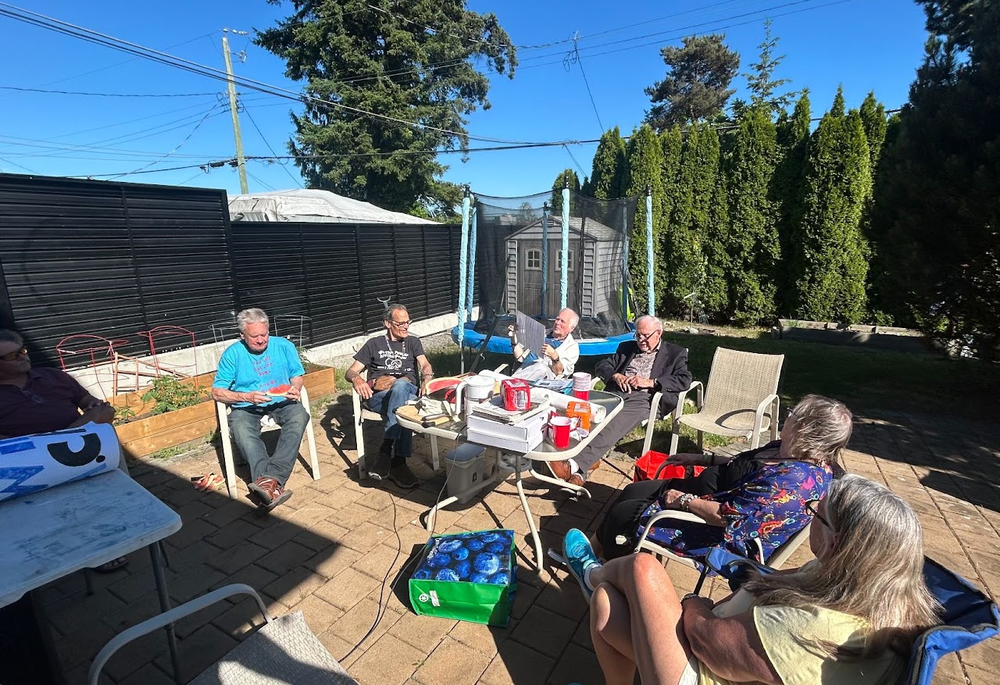
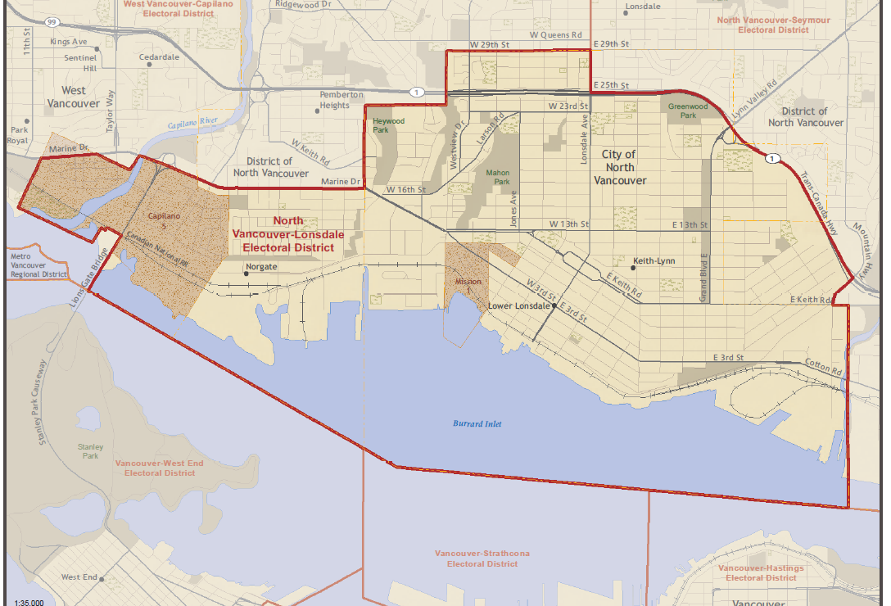
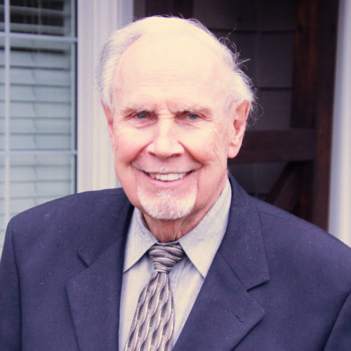

Affordability
Housing, everyday costs and the pressure on working families, young people and seniors need practical, measurable responses.
Explore the concerns →North Shore accountability
North Vancouver–Lonsdale deserves transparent leadership, practical solutions and a representative who listens to the people who live here.
NORTH VANCOUVER
RECALLLISTEN. ACCOUNT. DELIVER.
Choose a section to find what you need.
Important information
In British Columbia, formal recall petitions are governed by the Recall and Initiative Act and administered by Elections BC. Only an eligible individual voter can apply to start a petition; an organization cannot apply on its own. Timing restrictions also apply, including an 18-month period after an MLA’s election and a restriction before the next scheduled general election.
Read the official Elections BC guidance ↗What matters to our community
These are the issues this initiative believes deserve sustained attention, open discussion and clear accountability.
Housing, everyday costs and the pressure on working families, young people and seniors need practical, measurable responses.
Explore the concerns →North Shore residents need reliable transit and credible long-term plans for congestion and regional connections.
Explore the concerns →Growth planning should be matched with transparent plans for schools, healthcare, roads, utilities and public services.
Explore the concerns →Residents deserve safe public spaces, responsive services and honest conversations about community wellbeing.
Explore the concerns →Public decisions should be explained clearly, with meaningful consultation and accountability for results.
Explore the concerns →Local perspectives should be heard consistently—not only during election campaigns or public announcements.
Explore the concerns →Issues & public record
The initiative’s concerns are political assessments. We encourage residents to review primary sources, public records and government explanations before drawing their own conclusions.
Questions about provincial powers, project delivery, consultation and the balance between speed and public oversight.
Whether housing requirements and population growth are being matched with the infrastructure and services neighbourhoods need.
What is being done about recurring congestion, transit capacity and regional transportation options.
How major projects are managed, how delays and cost changes are explained, and what accountability is available to the public.
Whether residents can get clear answers and have a meaningful role in decisions that affect their communities.
We aim to distinguish documented facts from opinion. If you spot an error or have a primary source to share, please contact the initiative.
Campaign updates
Follow developments, community activity and opportunities to participate. This page will be updated as confirmed information becomes available.
Community events create space for residents to meet, share concerns and discuss the future of the North Shore.
See community photos →Review the official requirements, eligibility rules and timing before making plans around a formal recall petition.
Elections BC recall guide ↗We welcome reliable volunteers and community members who want to contribute ideas, research, communications or practical support.
Ways to contribute →Our community
Community conversations, volunteer time and local knowledge all help keep public accountability alive.
Be part of it →

North Vancouver–Lonsdale
Supporters & community voices
The people below have been identified by the initiative as public supporters. Their inclusion here reflects the initiative’s own listings, not an endorsement by any organization they may be associated with.
Listed supporter
Publicly listed by the initiative as supporting accountability, transparency and public participation.

Listed supporter
Publicly listed by the initiative as a supporter and community voice on public policy.
Take part
Help with research, outreach, event support, communications or thoughtful discussion. Remote participation is welcome for suitable roles.
✓ Flexible volunteer contributions
✓ Remote participation welcome
✓ A focus on respectful, constructive work
Volunteer
Tell us a little about yourself and the kind of contribution that suits you. You can participate remotely where the role allows.
Submitting this form expresses interest; it does not register you as an official recall petition canvasser. Official canvassing has separate Elections BC requirements.
Contact
Send a message, share a useful source, or ask how you can contribute.